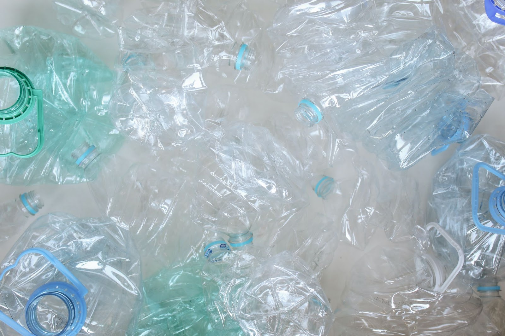

In well developed regions like the European Union where policies are in place to make sure industries form a circular economy and hence creating recycled products becomes a criteria of utmost importance for European companies like Pentatonic.3 The current catalog of the company has a wide range of products like chairs, tables, pillows and other products from post consumer waste and are built in such a way that someday they can be recycled again. Apart from that many of their products are made by using recycled plastic, a material which the co-founders Jamie Hall and Joe Boedecker believe has a lot of untapped potential.
One report says that almost 480 billion plastic bottles were purchased in the year 2017 itself and the cofounders of Pentatonic are making a point that they use this excess plastic in their raw materials. One of the best parts about this plastic is that it is pliable and flexible and hence the people at Pentatonic can use the polyethylene present in the plastic (PET) to make upholstery and seatings. They have also formed collaborations with waste management companies in Europe and Taiwan based international upcycling company Miniwizan, they are also focussing on transforming various other recyclable materials like glass from electronics into glassware, tables and hangers.4
While the example of Pentatonic is of a new and
upcoming startup, Emeco, Hannover, Pennsylvania, is a good example of a firm that has been upcycling
since a long time. The company has an excellent reputation of using salvaged aluminium since World
War II. The full name of the company is Electrical Machine and Equipment Co. and they began
operations by employing local sheetworkers to make chairs specifically for sailors and ships. Today,
the company is still following its mission to make chairs that survive brutal seas but now catering
restaurants, hotels and offices.5
1 https://sustainability.aboutamazon.com/environment/circular-economy/recycling
2 https://www.starbucks.in/responsibility/environment/recycling#:~:text=Recycling%20in%20Stores,wher
e%20our%20stores%20are%20located.
3 https://www.dezeen.com/2018/03/22/pentatonic-snarkitecture-fractured-furniture-recycled-waste/
4
http://breakthrough.unglobalcompact.org/briefs/miniwiz-taiwans-trash-business-arthur-huang-jarvis-liu/
5 https://www.emeco.net/support
The original process to make the chair hasn't changed at all in the past decades. It includes 77
steps to make the chair which includes welding soft recycled aluminum, treating the metal to 960
degree salt bath and baking the chairs before polishing them thrice by hand. The company claims that
its chairs use processes which turn reclaimed materials into furniture products that are almost
thrice as strong as chairs made from steel. In order to make their signature 111 Navy Chair the
company makes use of truckloads of PET bales on a weekly basis that contain more than 20000 bottles.
By following this philosophy they have managed to keep 21 million plastic bottles out of the
landfills since 2010 and Emerco says it plans to increase this number. All the products from Emerco
come with a buyback guarantee to upcycle the materials again.
Another company making strides in upcycling is Arhaus Furnitures6 from Cleveland which has various products in its collection that incorporate recycled materials. As a part of their business model Arhaus is sourcing recycled copper from Mexico as a part of its dining room furniture collection by creating sets that have been melted down and molded.7 The process begins with melting the metal itself then it is cured and wood fired and the tops are hand pounded multiple times before being waxed and shined. These copper tables are made in the region of Mexico where Monarch Butterflies annually migrate and to add this touch they emboss the table with the butterfly itself to signify the place. Arhaus furniture is also drawing inspiration from the outdoors and wild by using petrified wood to create innovative designs.
Swedish Furniture giant Ikea
is also investing a lot in sustainability domains and is not shying away from going for ambitious
targets like a goal which they have set to reach 100 percent recycled materials by 2020 which was
hampered by the Pandemic.8Ikea have also committed themselves to using organic cotton for their
upholstery as the organic cotton is known to come from farmers that use less water, chemicals and
pesticides. Their wood products use a wide range of recycled materials and they are also trying
their best to phase out their existing oil based polystyrene in its flat packs and are replacing
them with fully recyclable materials. In 2012, Ikea came out with its initiative called People and
Planet Positivity Sustainability strategy which included several programs like mattress recycling
program and they plan to include more fully recyclable products and inspired collections. With big
companies like Ikea coming forward with such initiatives, it is bound to push more and more
companies to follow suit and adopt new recycled products and related sustainable practices.
6 https://www.arhaus.com/landing-pages/green-initiative/
7 https://www.arhaus.com/furniture/dining-room-furniture/
8 https://about.ikea.com/en/sustainability/a-world-without-waste/renewable-and-recycled-materials 9
https://gbl-sc9u2-prd-cdn.azureedge.net/-/media/aboutikea/pdfs/people-and-planet-sustainability-strat
egy/people-and-planet-positive-ikea-sustainability-strategy-august-2020.pdf?rev=3a3e9a12744b4705
b9d1aa8be3b36197&hash=099EADD58A6B850BD522866B8E01F518